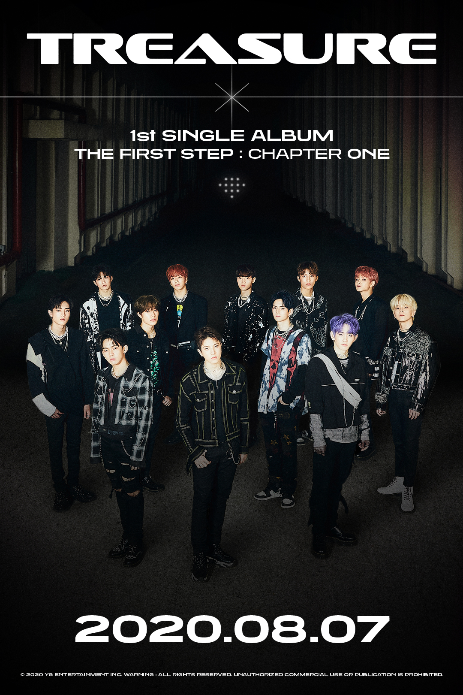
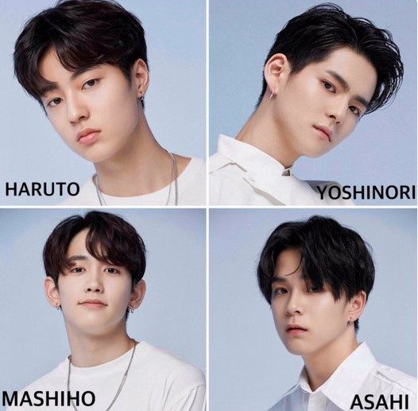

Whos TREASURE?
They are a group that has recently debuted, on August 7th, 2020 with the song BOY that reached 200,000 views in just one minute, though thier goal was 20 Million in 24 hours, they have only reached 10 million in 24 hours.
What made them so popular?
The fact that YG Entertainment made a survival show called "YG TREASURE BOX" made BLACKPINK, WINNER<, iKON, and Big Bang fans get excited for their new boy group because all of thier groups were apparentlly all very succesful. They are also popular due to their Japanese line, mostly Watanabe Haruto, who is like Felix, he has a very deep voice. They are also popular becuase they are very young. The youngest is Junghwan, he is 15 years old, and the oldest is Hyunsuk who is 21 years old./p>
Who are foreigners?
There are 4 foreigners out of all 12 of them. They are all Japanese, out of all of them Haruto is the most popular, due to because he is tall, handsome, youngest Japanese member, and has a deep voice like Felix of Stray Kids.
